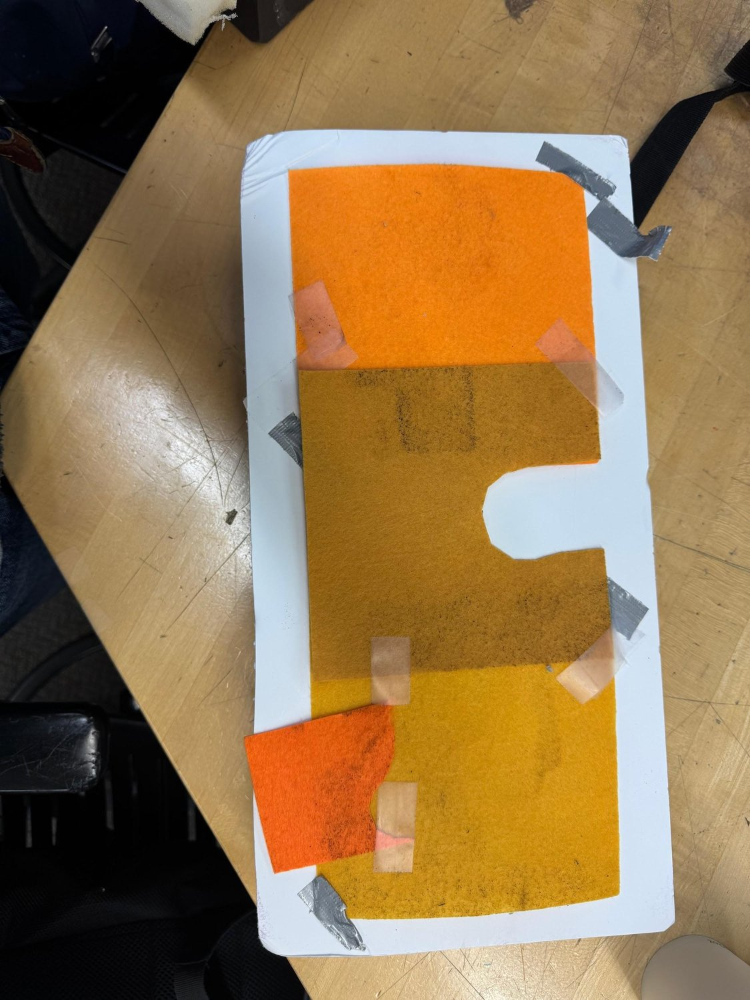
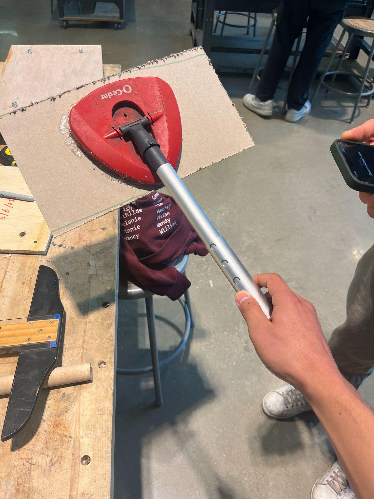
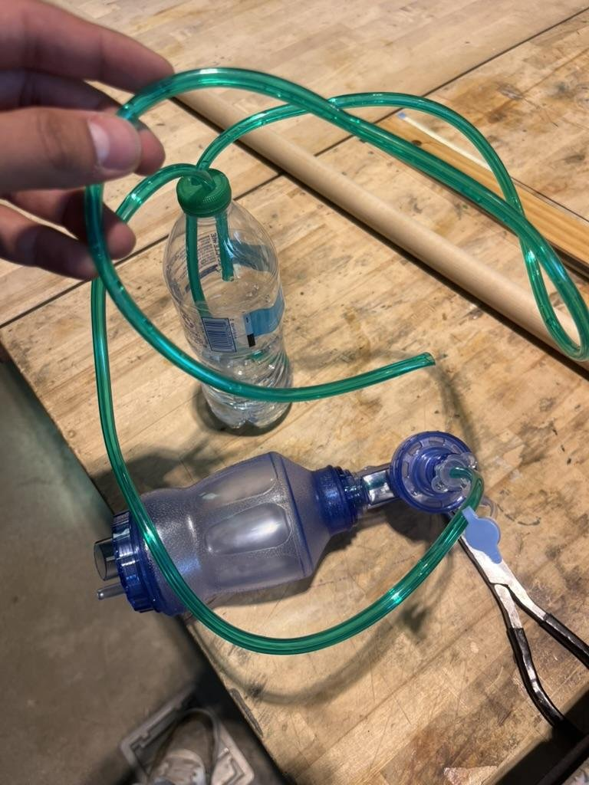
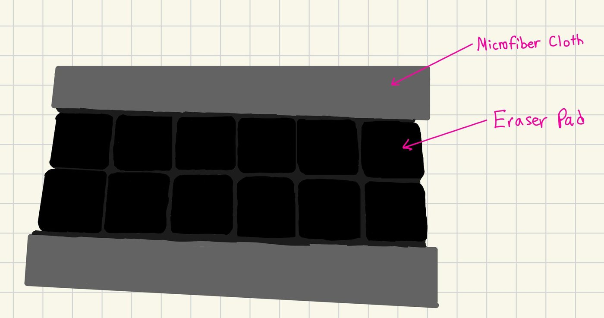
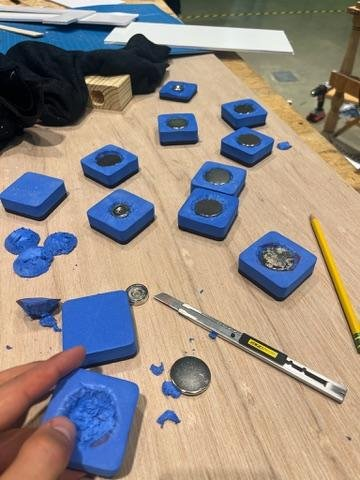
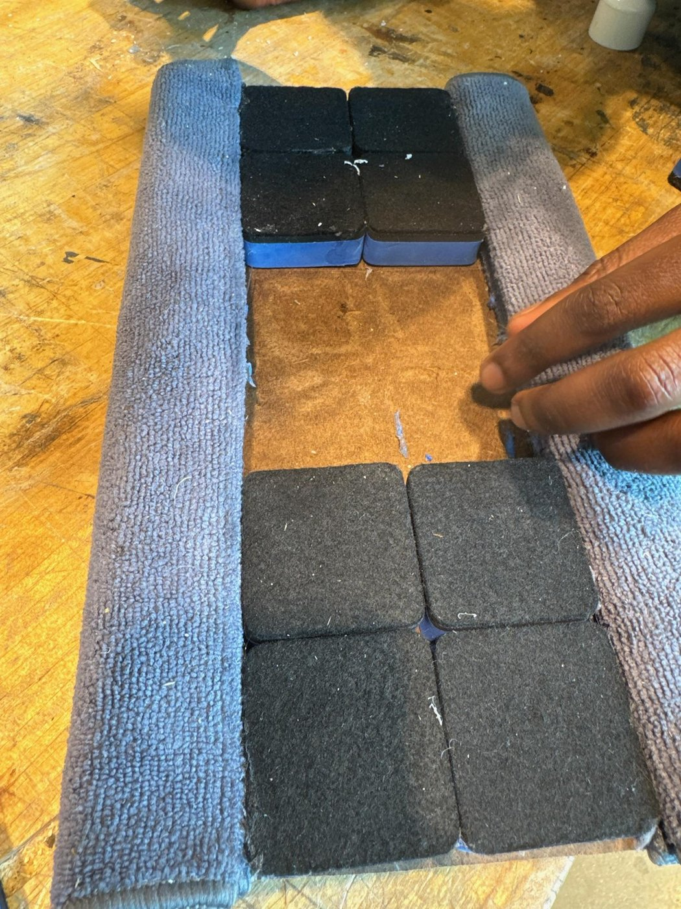
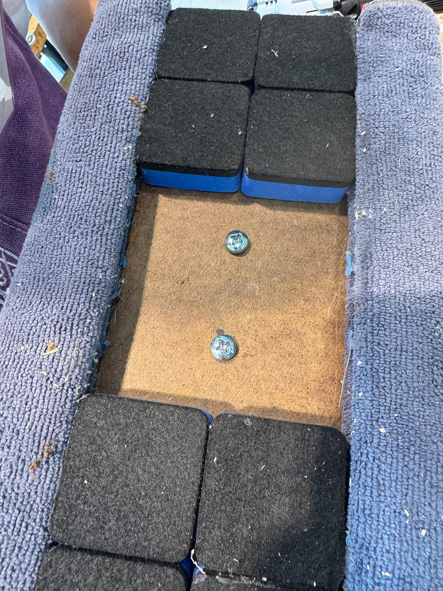
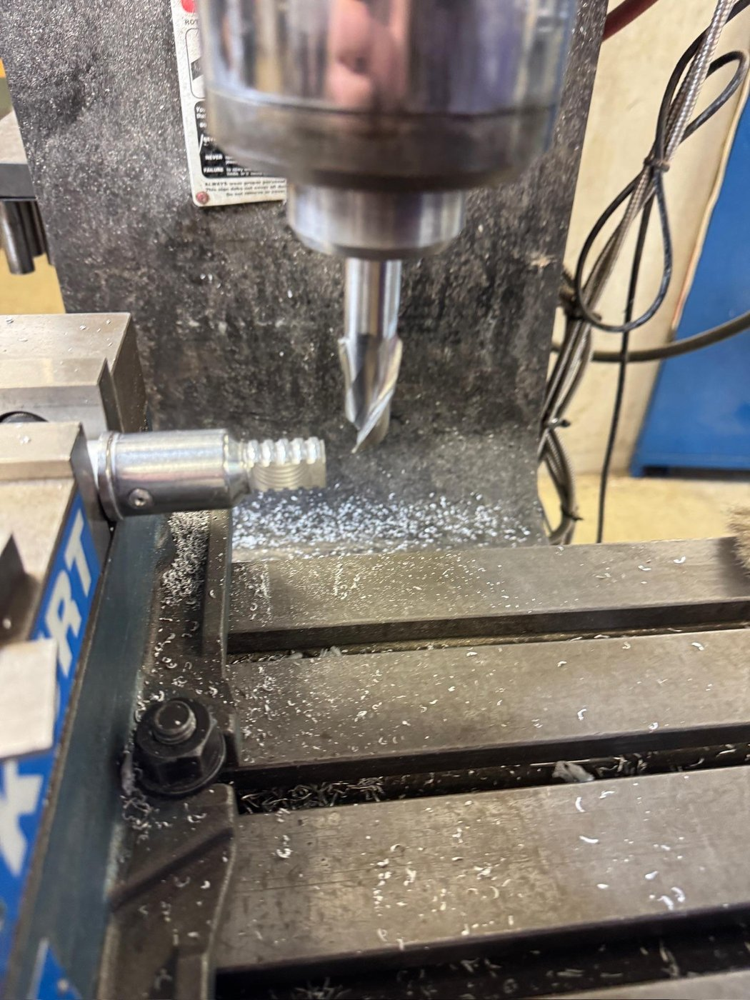
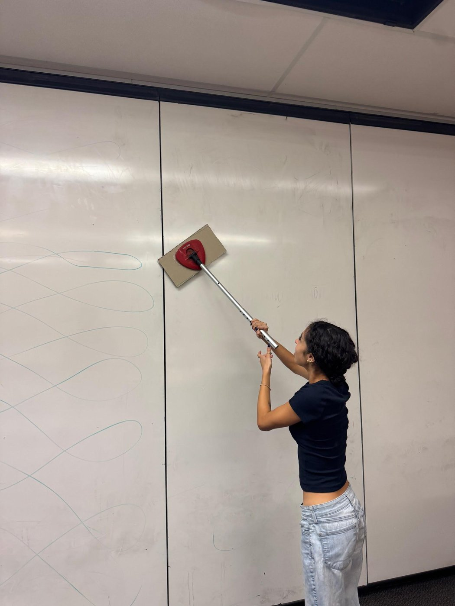
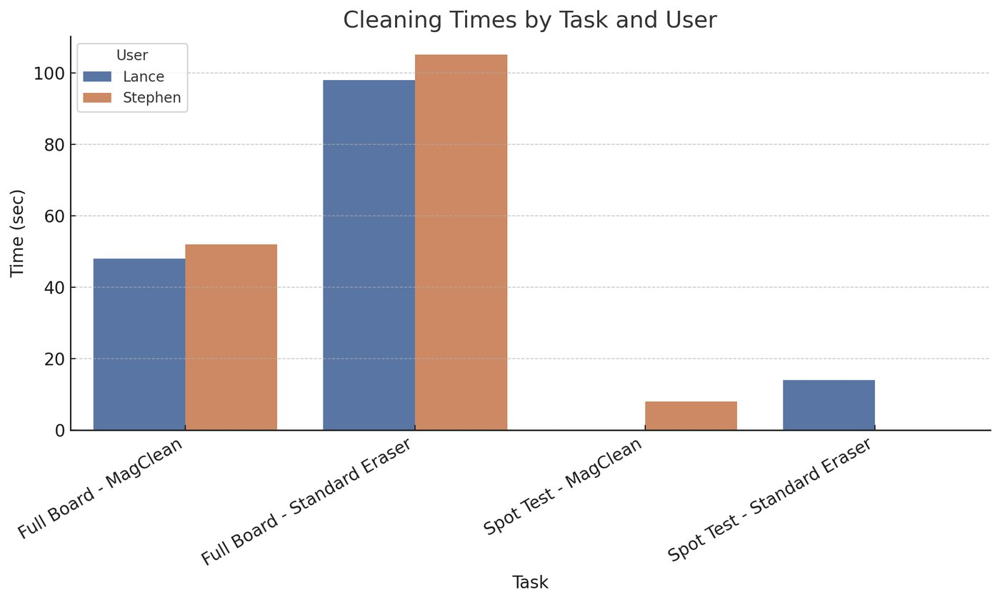

MagClean
Design Thinking & Communication — Northwestern · Spring 2025
{kind=link}
{kind=link}
The finished tool on a classroom board, and the concept diagram.
Overview
Northwestern’s DTC classrooms run back-to-back sessions on wall-sized whiteboards, and the standard felt eraser is small, leaves ghosting, and forces instructors to fetch a stool for the top of the panel. Our four-person team (Simon Kaminer, Paul Akpalu, Diego Niiler, and me) built a non-electric, magnet-assisted eraser on a telescoping pole; I designed and built the cleaning head end to end, produced the concept sketches for the pole and rotating head, and machined the pole assembly. Over the quarter we:
- Interviewed the client — a DTC instructor who cleans these boards between sections
- Built and tested three concept mockups
- Designed and built the dual-surface magnetic cleaning head (my part)
- Machined the telescoping pole on the manual mill
- Ran an expert user test and timed cleaning trials on real classroom boards
Goals & Requirements
- “Speed over deep cleaning” — the client’s first priority, which killed every concept optimised for scrubbing power
- Clean a full classroom board in under a minute, removing visible ink in a single pass
- Nothing permanently mounted — the whiteboard walls fold and have to store
- No consumables and no power — anything left loose in the room walks off
- Suit the shortest and tallest users without a stool, and don’t abrade the board surface
Design & Build
No concept won outright — each was built and tested, and the final tool assembles the parts that survived. The gravity cleaner cleaned poorly, but its magnets demonstrably raised pad pressure. The Swiffer-style mockup contributed the pad, swivelling head, and telescoping pole; its spray mechanism was dropped as over-built. The reservoir concept contributed the absorbent pad. Total build cost: $70.94, entirely off-the-shelf apart from the shop-cut backing.
{kind=link}

Gravity cleaner — the magnets survived
{kind=link}

Swiffer-style — pad, swivel head, pole
{kind=link}

Reservoir — contributed the absorbent pad
The cleaning head was mine end to end. Neodymium magnets behind the pad pull the head into the steel-backed board, supplying contact pressure the user would otherwise have to push for — that’s what makes the tool less tiring. Each magnet sits recessed in a pocket carved into the foam backing: a proud magnet would ride the pad off the board, and recessing spreads the pull across the backing rather than a glue joint. The head is about 12 × 7 in — roughly 7× the board area per stroke of a standard classroom eraser — with a dual surface: dry-erase blocks down the centre for marker, and microfibre strips along both long edges (the trailing edge changes with stroke direction) for the ghosting the felt eraser leaves behind.
{kind=link}

My pad sketch — dry-erase centre, microfibre border
{kind=link}

Magnet pockets carved into the foam backing
{kind=link}

Dual-surface layout — eraser centre, microfibre edges
The hinged pole mount went on the back of the head, and I machined the telescoping pole (1.5–3 ft) on the manual mill. An expert user test with Professor Birdwell, a DTC instructor and the target user, on 8 May 2025 found the weakness immediately: the head wasn’t applying enough pressure for its size, since a large pad spreads the user’s force over more area. His prescription — cut surface area, add magnets, lighten the tool — changed the design on all three counts, and his push for a ball-and-socket joint went into the bill of materials. Two suggestions we did not act on remain open: a detachable head for close-up work, and somewhere for the tool to live in the classroom.
{kind=link}

Finished head, ~12 × 7 in
{kind=link}

Pole machined on the manual mill
{kind=link}

A timed run in the classroom
Outcomes
- Full board (4,725 in²): 98–105 s with the standard felt eraser → 48–52 s with MagClean, ~50% faster
- Spot clean (35 × 31 in): 14 s → 8 s, ~43% faster
- ~7× the board area per stroke of a standard eraser, for a $70.94 build cost
- Testers reported less effort and better reach on tall panels, with less ghosting on inspection
Scope note: timing comes from a small user group over a handful of runs, not a controlled trial.
{kind=link}

Timed runs, two testers, full-board and spot-clean tasks